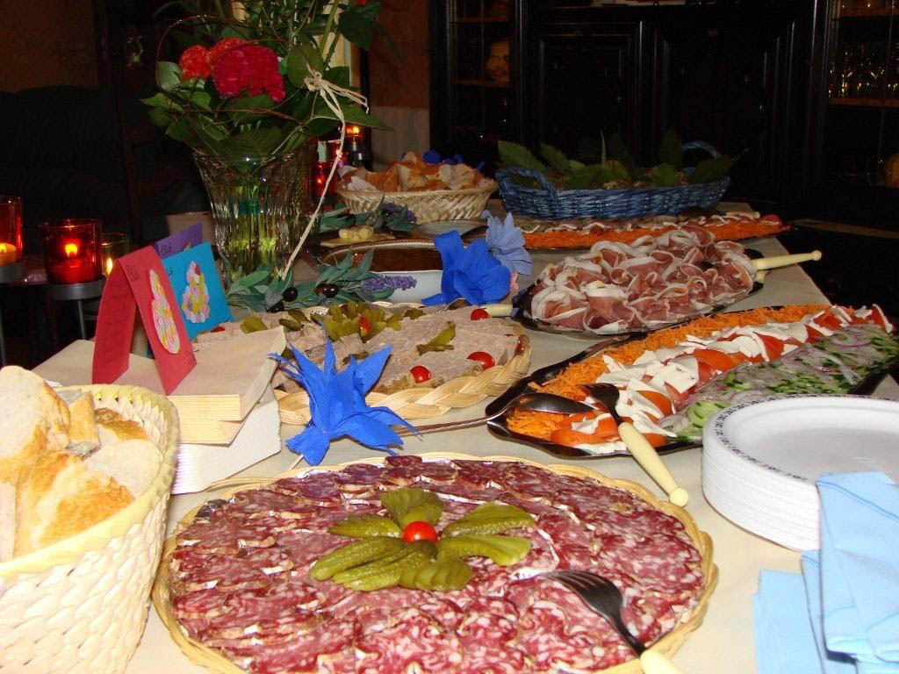
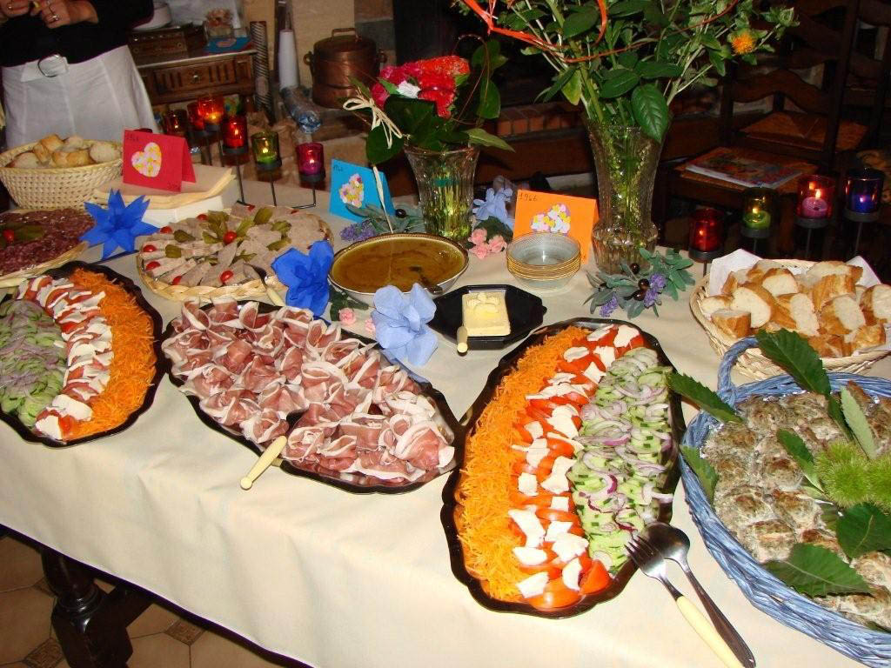
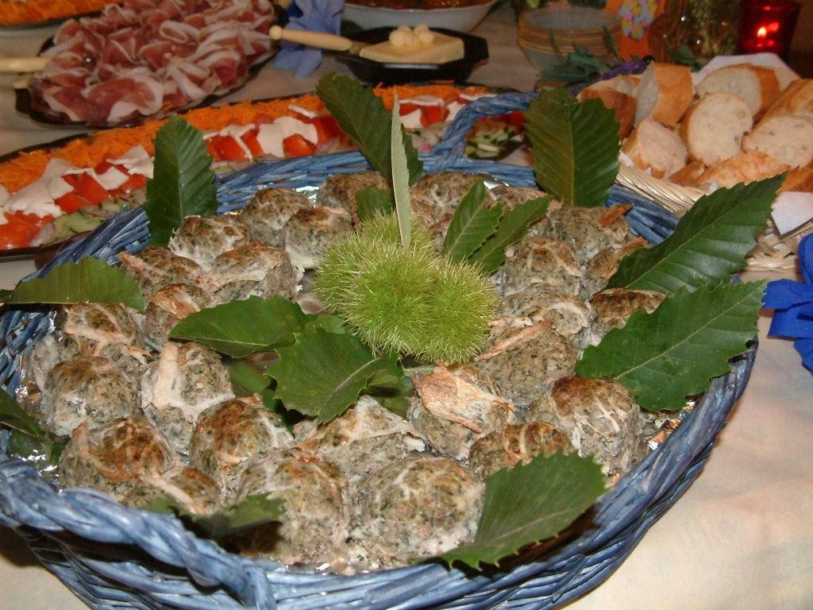
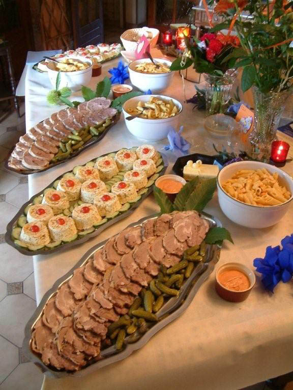
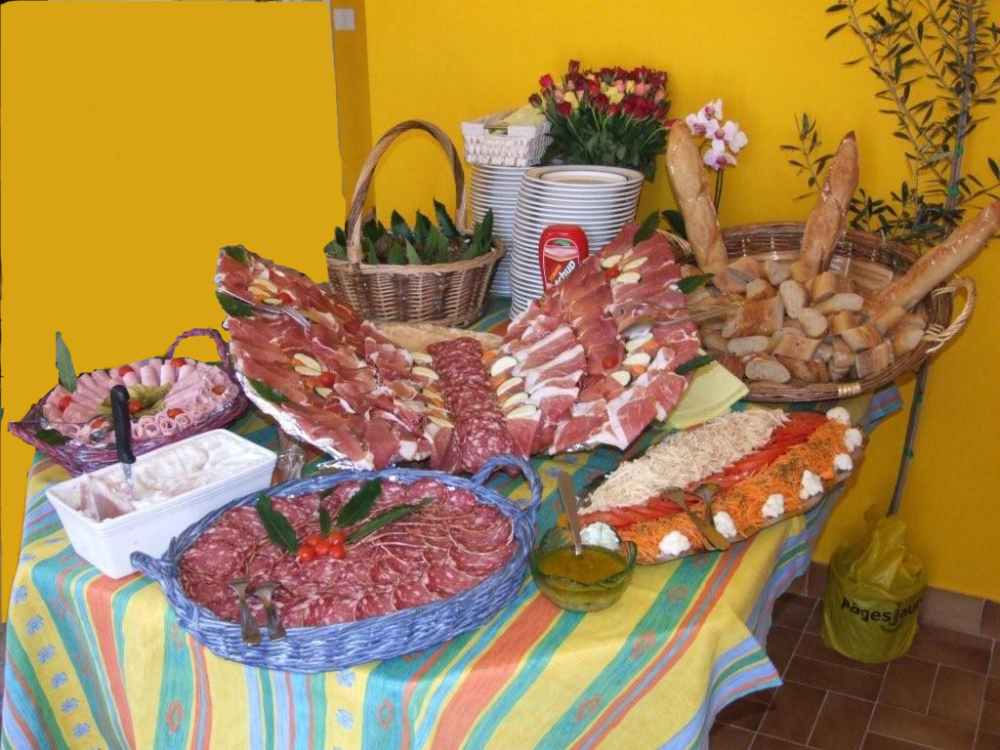
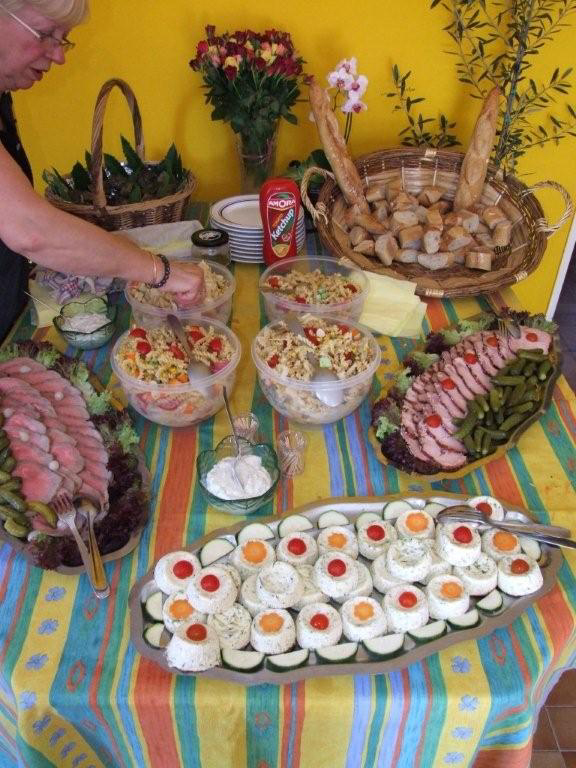

Le Cévenol — Commerce Multiservices à Bessèges depuis des générations. Viandes de tradition, plats cuisinés et buffets sur mesure.
Nous contacterUn choix de viandes de tradition bouchère, sélectionnées avec soin auprès de nos éleveurs locaux des Cévennes.
Charcuterie artisanale, saucissons, terrines et pâtés préparés dans le respect des recettes traditionnelles cévenoles.
Buffets de mariage, campagnards et apéritifs. Plats cuisinés maison et livraison à domicile pour tous vos événements.






Installée au coeur de Bessèges, la Boucherie Charcuterie Passieu est un commerce de proximité qui perpétue les traditions bouchères cévenoles.
Nous proposons un large choix de viandes sélectionnées, de charcuterie artisanale et de plats cuisinés maison. Notre service traiteur accompagne vos événements : mariages, fêtes de famille, réceptions et buffets campagnards.
Livraison à domicile de vos commandes sur le secteur de Bessèges et ses environs.
2 rue Albert Chambonnet
30160 Bessèges